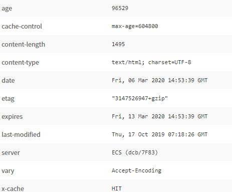

Este método realiza una acción similar al método GET solo que a diferencia de este HEAD solo solicita los metadatos
de un recurso o archivo y no todo elemento como tal.
Por ejemplo:
En el encabezado que el servidor le envía de respuesta, el cliente encuentra los datos sobre el tamaño del archivo en el campo “content-length”:

El servidor responde a la petición HEAD con los datos clave sobre el archivo en cuestión.